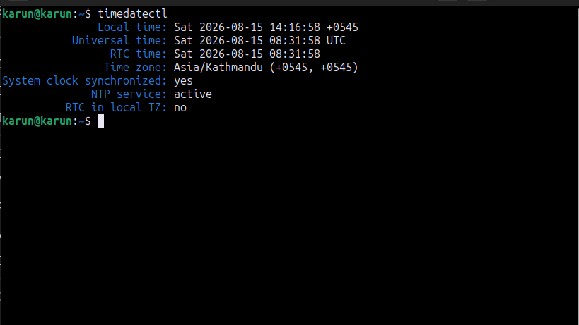
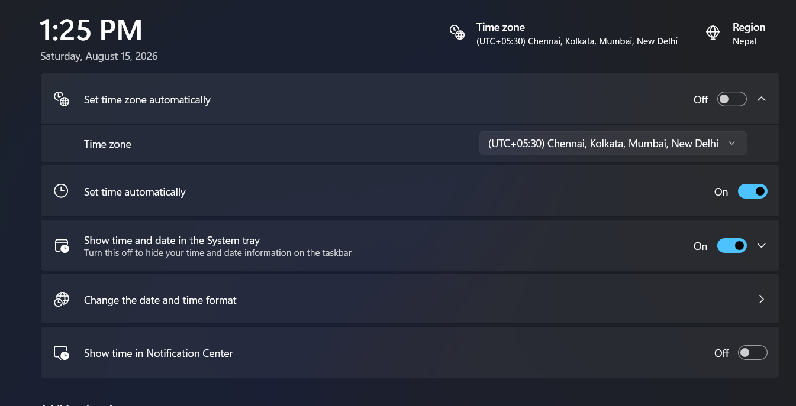

Why This Happens
Your PC has a hardware clock, also called the RTC, that keeps time even when the computer is off. The problem is that Windows and Linux do not treat that clock in the same way:
- Windows assumes the hardware clock stores your local time.
- Linux usually assumes the hardware clock stores UTC time.
Because both systems are reading the same clock but interpreting it differently, one of them will show the wrong time. The easiest fix is to tell Linux to use local time, which matches what Windows expects.
Prerequisites
- A working dual boot setup with Linux and Windows 11
- Access to a Linux terminal
- A few minutes to make the fix
Step 1: Check Your Current Time Settings in Linux
Boot into Linux and open a terminal with Ctrl + Alt + T. Then run:
timedatectl
This shows your current time, your timezone, and whether the hardware clock is set to local time or UTC. Look for the line that says RTC in local TZ.
If it says no, Linux is using UTC while Windows expects local time. That is the cause of the mismatch.
Step 2: Set the Hardware Clock to Local Time
Run the following command in Linux:
timedatectl set-local-rtc 1 --adjust-system-clock
This tells Linux to treat the hardware clock as local time and sync the system clock immediately. You may see a warning about this setting, but for a normal home dual boot setup it is the standard and easiest fix.
Step 3: Turn Off Automatic Time Sync in Windows
Restart your PC and boot into Windows 11. Then follow these steps:
- Open Settings
- Go to Time & language
- Select Date & time
- Turn off Set time automatically

This prevents Windows from overriding the corrected time. Restart once more and check both systems. The clock should now match correctly.
Quick Troubleshooting
| Issue | Fix |
|---|---|
| Time is still wrong after Step 2 | Make sure the command ran with no errors, then reboot and check again. |
| Time drifts again after a while | Keep Set time automatically turned off in Windows. |
| I am not sure if RTC is in local time | Run timedatectl again and check the RTC in local TZ line. |
Final Result
After the clock is corrected, your Windows 11 and Linux systems should show the same local time when you switch between them. This usually fixes the problem permanently for a normal dual boot setup.
More beginner guides